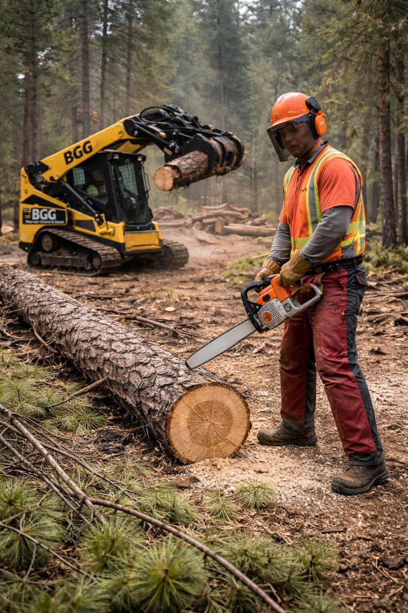
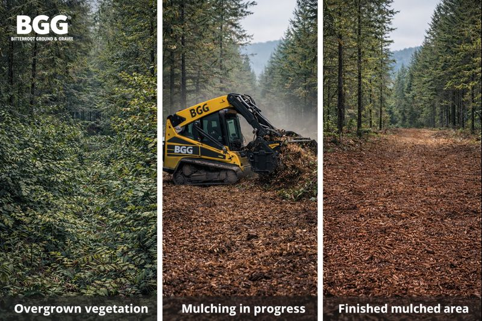

What We Do Best

Forestry Mulching
Overgrown brush and dense vegetation under 8" diameter cleared efficiently with CTL mulching.

Land Clearing
Selective timber removal, grubbing, and prep for pads, access, and development.

Access Creation
Trails, driveways, ROW clearing, and road cutting built for drainage and durability.